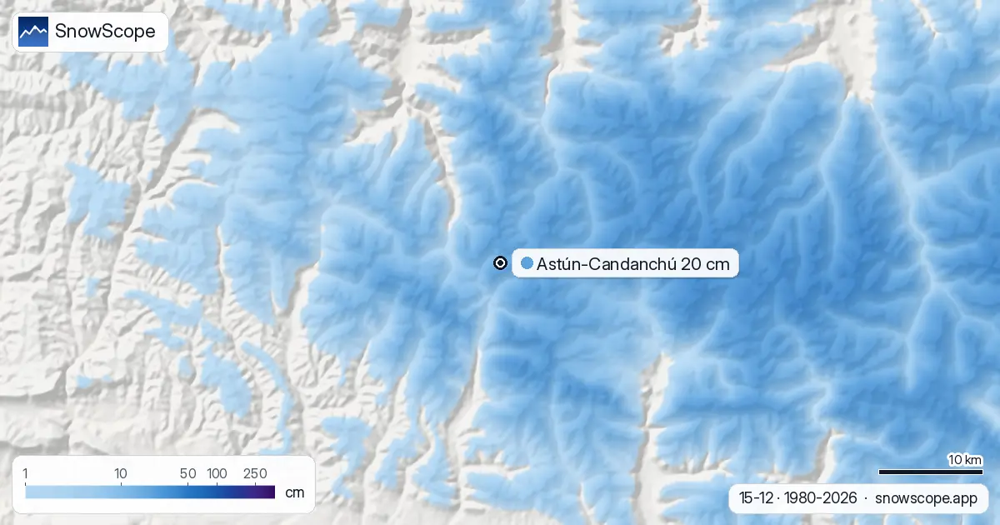
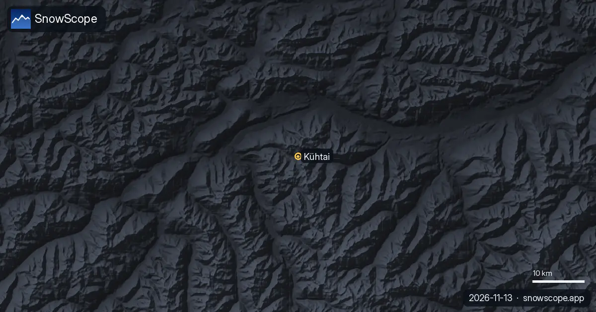
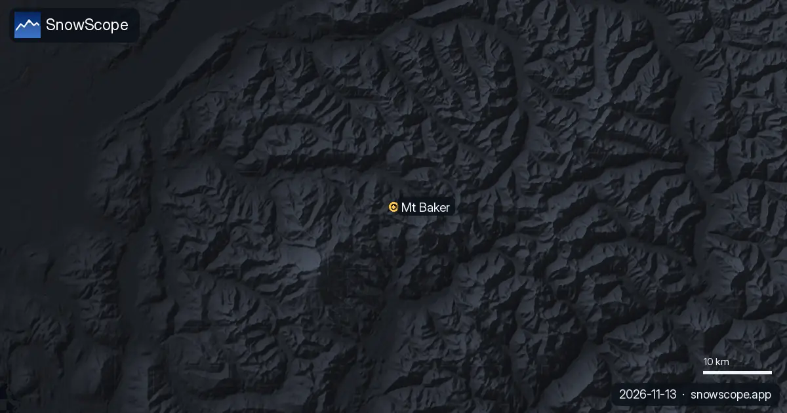
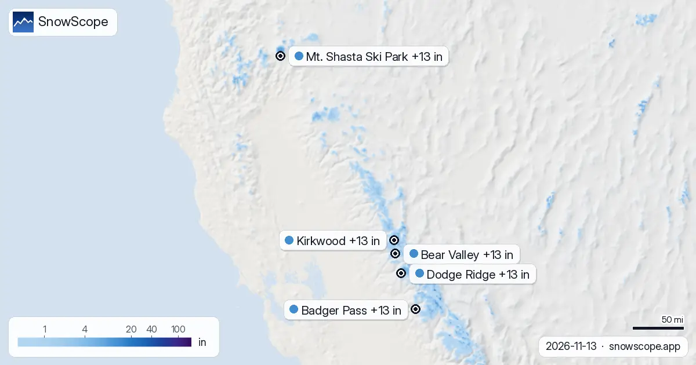
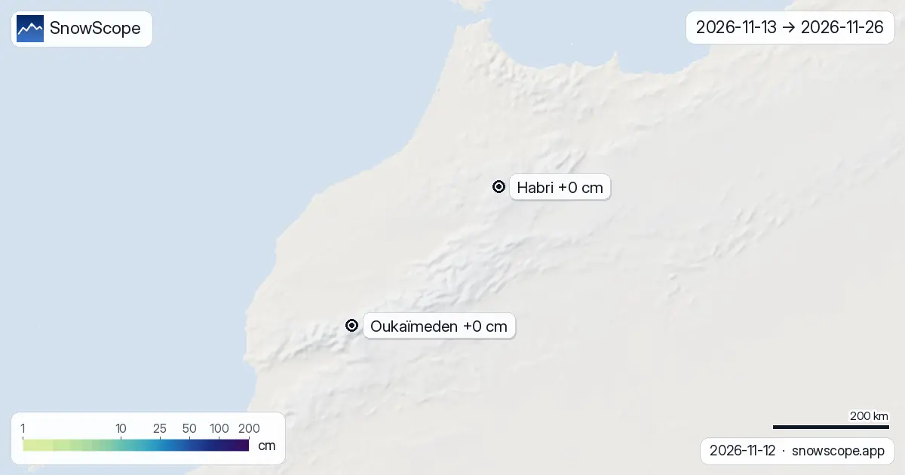
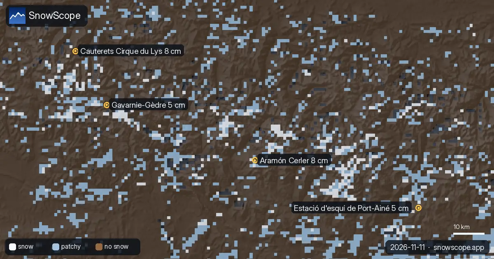

Schneeberichte
Tägliche Schneeberichte für Skifahrer: wo der Schnee liegt, was kommt und wo du fahren kannst, aus der SnowScope-Schneekarte und Messstationen. Jede Zahl stammt aus den Daten des Tages.

Fahre diesen Dezember auf den 131 km Pisten der Forêt Blanche mit einem 6-Tage-Pass für 298 EUR.

Ruka im Dezember: 6-Tage-Skipass 265 EUR, Tageskarte 58 EUR; 36 cm an einem typischen 15. Dezember, aber nur 39 % der Winter mit 30 cm in der ersten Woche.

Bei Monterosa Ski kostet der Tagespass online 40,00 bis 71,00 EUR. Im Dezember liegt der Schnee oben: üblich 124 cm auf 3.030 m, 6 cm auf 1.207 m.

Bei Wolf Creek kostet das Erwachsenenticket für die Saison 2026-2027 an normalen Tagen 96 $ und an Spitzentagen 110 $; auf halber Höhe lagen an einem typischen 15. Dezember 34 in (87 cm) Schnee.

Fellhorn/Kanzelwand im Dezember: 63 cm am Gipfel (1965 m) an einem typischen 15. Dezember, 10 cm im Tal; 6-Tage-Skipass im Advent 344,50 EUR bis 20. Dezember.

Plane deinen Dezember-Trip 2026 nach Les Orres, indem du die wöchentlichen Skipasspreise mit unserer Schneehistorie aus 46 vergangenen Wintern vergleichst.

Hemavan im Dezember: 82 cm an der Mittelstation an einem typischen 15. Dezember, jeder Winter mit 30 cm Mitte Dezember; der tiefste Dezember unserer Nordic-Auswahl.

Tageskarten in Brighton starten für 2026/27 bei 72 $, wenn man früh kauft. Auf halber Höhe liegen am 15. Dezember meist 37 in (94 cm) Schnee, gegenüber 25 in (64 cm) in Park City.

Vergleiche Grandvalira und spanische Skigebiete im Dezember 2026 bezüglich Schneehöhen, Lift-Höhen und Preisen ab 49,00 EUR.

Pitztaler Gletscher im Dezember: 87 cm an der Mittelstation an einem typischen 15. Dezember, mehr Dezemberschnee als in den 1980ern; Tageskarte 77 EUR, 6 Tage 410 EUR.

16 preisgünstige US-Skigebiete, eingestuft nach den Dezember-Schneechancen aus 46 vergangenen Wintern, mit den geprüften Tagespreisen: von 49 $ unter der Woche bis 125 $ und mehr.

Für eine günstige Skiwoche mit der Familie im Dezember in Astún-Candanchú solltest du Ende Dezember anpeilen, wenn die oberen Pisten in 67 % der vergangenen Winter guten Schnee haben.

Deutschland im Dezember: Zugspitze und Fellhorn-Gipfel hatten Mitte Dezember in mindestens 9 von 10 Wintern 30 cm; Sudelfeld, Brauneck und Feldberg nur selten.

Puy-Saint-Vincent bietet einen 44 EUR Erwachsenen-Tagespass und soliden Dezember-Schnee in der Höhe, hier im Vergleich zum großen Nachbarn Serre Chevalier.

In all unseren 46 vergangenen Wintern lagen an Grand Targhees Mittelstation am 15. Dezember mindestens 20 in (50 cm) Schnee. Das Online-Tagesticket kostet je nach Datum 125 $ bis 180 $.

Oppdal im Dezember: 60 cm an der Talstation (585 m) an einem typischen 15. Dezember, 93 % der Winter mit 30 cm Mitte Dezember – besser als Trysils Tal.

Grimentz-Zinal bietet 71 km Pisten und verlässlichen Schneesicherheit in großer Höhe für Ihre Dezember-Reise, mit 6-Tages-Pässen für CHF 339,00.

Österreich vor Weihnachten: Galtür 258 EUR und Kühtai 269 EUR für 6 Tage, mit 30 cm in über 90 % der Winter; Gletscher kosten mehr, kleine Hügel sind ein Risiko.

Planst du eine Reise nach Baqueira Beret im Dezember? Sieh dir unsere Schnee-Historie an, Ticketpreise ab 70,00 € für einen Tag und den Vergleich zu Astún-Candanchú.

Wir bewerten französische Skigebiete nach der Schneewahrscheinlichkeit im Dezember und den Skipasspreisen, beginnend bei 36,00 EUR für einen Tagespass für Erwachsene in Les Karellis.

In Oukaïmeden gibt der Dezember 18 cm auf Mittelstationshöhe in einem typischen Monat, gegen 44 cm im Februar und 53 cm im März. Was 46 Winter über den richtigen Skimonat sagen.


Galtür im Dezember: 55 cm an der Mittelstation an einem typischen 15. Dezember, 93 % der Winter mit 30 cm Mitte Dezember; Tageskarte Nebensaison 55,50 EUR bis 18. Dezember.

Geilo im Dezember: 57 cm an der Mittelstation an einem typischen 15. Dezember, 96 % der Winter mit 30 cm Mitte Dezember; Tageskarte ab 590 NOK (rund 56 EUR).

Grandvalira wird oft als günstiges Skigebiet für Dezember verkauft, doch der Naturschnee an der Talstation liegt in den vergangenen Wintern im Schnitt bei nur 9 cm.

Hemsedal im Dezember: 70 cm an der Mittelstation und 106 cm am Gipfel an einem typischen 15. Dezember, aber 32 cm im Tal; Geilo nebenan ab 590 NOK pro Tag.

Hintertuxer Gletscher im Dezember: 98 cm auf 3245 m und 52 cm an der Mittelstation an einem typischen 15. Dezember; Tageskarte 82 EUR, 6 Tage 399 EUR.

Vergleiche die Schneechancen im Dezember und geprüfte Skipasspreise ab 40,00 EUR in italienischen Skigebieten für deinen Wochenendtrip mit dem Auto.

Skifahren in Kühtai im Dezember: 60 cm an der Talstation (1939 m) an einem typischen 15. Dezember, 6-Tage-Skipass in der Nebensaison 269 EUR bis 18. Dezember.

Les 2 Alpes reicht bis auf 3.511 m für viel Schnee im Dezember 2026, mit einem 6-Tage-Skipass für Erwachsene für 266,50 EUR.

Les Karellis bietet 45 km Pisten und einen 6-Tage-Skipass für Erwachsene für 191,00 EUR mit einer 98 %igen Schneewahrscheinlichkeit auf mittlerer Höhe Ende Dezember.

Levi im Dezember: 38 cm an einem typischen 15. Dezember, 91 % der Winter mit 30 cm in der Weihnachtswoche, mehr Dezemberschnee als früher; Tageskarte 60 EUR, online 57 EUR.

Fahr Ski in Livigno für 51,50 EUR pro Tag vor dem 18. Dezember, wenn der Schnee am Gipfel in 100 % der vergangenen Winter 30 cm erreicht.

In Michlifen haben 89 % der Winter am 15. Dezember fast keinen Schnee (unter 5 cm). Was 46 Winter über Skifahren im Mittleren Atlas im Dezember sagen.

Montgenèvre hat im Dezember üblicherweise 56 cm Schnee an der Talstation und bietet Wochenendfahrern damit eine bessere Schneelage als Sestriere auf der anderen Seite der Grenze.

Skifahren in Obertauern im Dezember: 43 cm an einem typischen 15. Dezember an der Mittelstation, 6-Tage-Skipass vor Weihnachten 331 EUR.

Oukaïmeden Mitte Dezember: 16 cm auf Mittelstationshöhe in einem typischen Winter, 50 cm oder mehr in nur 11 % der Winter. Datum für Datum, was 46 Winter sagen.

Oukaïmeden liegt 50 km Luftlinie von Marrakesch entfernt. Wie ein Dezember-Skiwochenende gelingt: wann man fährt, wie die Schneechancen stehen, was man über die Preise weiß.

Les 3 Vallées: 75,70 € pro Tag vom 5. bis 18. Dezember 2026. Oukaïmeden: kein offizieller Online-Tarif, 16 cm auf Mittelstationshöhe Mitte Dezember. Der ehrliche Vergleich.

Pila oberhalb von Aosta bietet einen günstigen Tagesskipass für 60,00 EUR und zuverlässigen Schnee im Dezember auf den oberen Pisten.

Die Lifte in Saas-Fee erreichen 3.556 m, wo unsere Schnee-Historie zeigt, dass 100 % der vergangenen Winter bis Mitte Dezember mindestens 30 cm Schnee hatten.

12 nordische Skigebiete im Dezember: Hemavan, Hemsedal und Geilo hatten Mitte Dezember in 96-100 % der Winter 30 cm an der Mittelstation; Tageskarten in Finnland 58-60 EUR.

Dezember-Schneechancen aus 46 Wintern und geprüfte Tagespreise: Ski Cooper 49 $, Les 3 Vallées 75,70 €, Oukaïmeden ohne offiziellen Tarif. Wo ein günstiger Dezember-Skitag funktioniert.

Entdecke die ruhigen Pisten von St-Luc Chandolin, wo die Schneehöhe auf mittlerer Höhe in 98 % der Winter Ende Dezember 30 cm erreicht.

Trysil im Dezember: 44 cm an der Mittelstation an einem typischen 15. Dezember, 83 % der Winter mit 30 cm Mitte Dezember; die Preise sind dynamisch, also früh buchen.

Valloire-Valmeinier bietet 131 km Pisten und eine 98 % Chance auf 30 cm Schnee auf halber Höhe bis Mitte Dezember.

Zugspitze im Dezember: 122 cm auf 2627 m an einem typischen 15. Dezember, Tageskarte online 70,50 EUR; Garmisch-Classic darunter 69 EUR mit deutlich weniger Schnee.

Mölltaler Gletscher im Dezember: 66 cm am tiefsten Lift (2103 m) und 128 cm an der Mittelstation an einem typischen 15. Dezember; 6-Tage-Skipass Nebensaison 332 EUR.

Mt. Baker im Dezember: 46 in (116 cm) Schnee auf halber Höhe an einem typischen 15. Dezember, und ein 98,80-$-Ticket von Montag bis Donnerstag, das es nur am Tag selbst an der Kasse gibt.

Kannst du dich als vorsichtiger Anfänger im Dezember auf Courmayeur verlassen, wenn es auf halber Höhe in unseren vergangenen Wintern im Schnitt 60 cm Schnee gibt?

Åre im Dezember: 40 cm an der Mittelstation an einem typischen 15. Dezember, 89 % der Winter mit 30 cm Mitte Dezember, aber oben ein starker Rückgang seit den 1980ern.

Die weiße Fläche auf der Karte sank von 49.467 sq mi (128.120 km²) (11. November) auf heute 49.050 sq mi (127.040 km²), und die Prognose sagt …

Von jetzt bis zum 16. November erwarten wir 5 in (12 cm) in Stowe, 4 in (11 cm) in Bolton Valley Resort und 4 in (10 cm) in Sugarbush Resort. Unsere …

201.390 km²: So groß ist die Schneefläche, die unser Modell heute in Westkanada zählt. Die letzte klare Ansicht jedes Ortes, bis zum 13. November: …

Skibedingungen in Deer Valley am 13. November 2026: noch kein richtiger Schnee am Boden, rund 4 in nahe dem Gipfel durch den Sturm am Wochenende, Regen auf der tiefen East-Village-Seite unter etwa 6,700 bis 7,600 ft und 11 in oben über die Woche.

Ist das ein guter Winterstart im Nordosten der USA? Der heutige Schnee in 4 Skigebieten im Nordosten der USA, verglichen mit demselben Datum in jedem …

Von jetzt bis zum 16. November erwarten wir 13 in (34 cm) in Bear Valley, 13 in (34 cm) in Dodge Ridge und 13 in (33 cm) in Badger Pass. Ein Wort zu …

Neuschneevorhersage für Park City (Utah) am 13. November 2026: im Moment kaum Schnee am Boden, rund 5 in nahe dem Gipfel durch den Sturm am Wochenende bei einer Schneefallgrenze von 7,400 bis 7,700 ft, Regen unten und rund 12 in oben über die Woche.

Stratton nach Höhe, aus unserem Modell: Gipfel 4 in (10 cm) (3.881 ft / 1.183 m), Mitte 2 in (6 cm) (2.936 ft / 895 m), Tal 1 in (2 cm) (1.991 ft / …

Füllt sich der Schneespeicher wie üblich? Wir haben den heutigen Schnee in 5 Skigebieten in Westkanada mit demselben Datum in jedem der letzten 46 …

Schneevorhersage für Alpental am 13. November 2026: etwa 1 in am oberen Berg, am Wochenende Regen fast bis zum Gipfel bei einer Schneefallgrenze von 5,400 bis 5,600 ft, nächste Woche oben 4 bis 5 in Regen und Schnee gemischt.

Schnee-Check für Bogus Basin am 13. November 2026: noch kein Schnee am Boden, am Wochenende Regen und nasser Schnee mit einer Schneefallgrenze bei 6,300 bis 6,800 ft, danach kältere Luft und rund 8 in am Gipfel bis nächste Woche.

39 in (99 cm) in den oberen Hängen: Deshalb steht Telluride oben auf unserer Liste. Schneehöhe heute, Neuschnee der letzten 72 Stunden, Prognose: …

Der Pistenplan von Sillian (Hochpustertal) mit unserer Schneeschicht am 13. November 2026: 8,6 cm am Gipfel auf 2399 m, untere Hänge aper, und eine Woche mit Regen und Schnee gemischt, Schneefallgrenze bei 1.800 bis 2.000 m.

Revelstoke Schneeprognose: bis zu 10–21 cm bis zum 16. November erwartet (Westkanada). In Whistler Blackcomb liegt die Nullgradgrenze am 13. November …

Schneelage in Silvretta Montafon am 13. November 2026: 4,5 cm am Gipfel auf 2421 m, Mittelstation und Tal noch aper, diese Woche rund 40 cm in der Höhe, im Tal Regen unter 1.500 m.

Schneebericht Lech Zürs am 13. November 2026: rund 6 cm oben (2436 m) und an der Mittelstation, aper in Lech auf 1430 m. Diese Woche oben 42 cm nach unserer Prognose, bis 91 cm nach anderen, Regen und Schnee gemischt um 1400 m. Und warum Lech die schneereiche Seite des Arlbergs ist.

Modell plus Prognose in den Alpen ergibt heute frischer Pulverschnee. Was du anziehst, was du einpackst und wann du fährst, Skigebiet für Skigebiet. …

Schneehöhe in St. Anton am Arlberg am 13. November 2026: rund 1 cm oben (2642 m), 5 cm an der Mittelstation, aper im Ort. Diese Woche 42 cm oben und 33 cm an der Mittelstation, Regen unter etwa 1480 m. Wie viel Schnee die steilen Hänge brauchen.

Dévoluy Schnee-Ausblick: auf Kurs für 24–32 cm bis zum 16. November (Alpen). Bis zum 16. November ergibt unsere Prognose 35 cm in Orcières Merlette, …

Die Schneefläche ist von 39.090 km² am 11. November auf heute 76.100 km² gewachsen, und unsere Prognose ergibt 57.910 km² am 16. November: Mehr Boden …

Die Skigebiete im Atlas halten heute keinen Schnee auf ihren Pisten. Schnee ist nur auf den höchsten Gipfeln gespeichert: etwa 40 km² Boden, bis zu …

Schneebericht Obergurgl am 13. November 2026: rund 20 cm oben (3024 m), 5 cm an der Mittelstation, schneefrei an den untersten Liften (1784 m). Schneeprognose der Woche: 34 cm oben, 21 cm unten, Schneefallgrenze um 1700 m. Dazu der übliche Saisonstart.

Die Schneehöhe in Sölden am 13. November 2026: rund 9 cm oben auf 3245 m, 5 cm an der Mittelstation, nichts im Tal auf 1346 m. Diese Woche 25 cm oben, Regen unter etwa 1620 m. Gletscher gegen Dorf, dazu 46 vergangene Winter.

Schneefall in Val Thorens, 13. November 2026: 27 cm am Gipfel (3175 m) und 17 cm auf 2498 m in sieben Tagen; die Schneehöhe beträgt 50 cm und 8 cm. Nächste sieben Tage: 86 cm am Gipfel, 73 cm auf 2498 m, Schneefallgrenze weit unter dem Dorf. Die übliche Saison aus 46 Wintern.

Die Schneehöhe in Chamonix am 13. November 2026, Höhe für Höhe: nichts im Talboden, 1 cm auf 2001 m, 12 cm oben am Brévent-Flégère (2486 m), 5 bis 24 cm oben an den Grands Montets (2768 m). Rund ein Meter in der Höhe diese Woche erwartet, Regen im Tal. Wie tief es in Chamonix üblicherweise wird, aus 46 Wintern.

Unsere Tipps sind La Grave, Pfelders und Les Deux Alpes: Wir haben die heutige Schneehöhe, den Neuschnee der letzten 72 Stunden und die Prognose …

Schneehöhe in Ischgl am 13. November 2026: rund 5 cm oben (2868 m), 4 cm an der Mittelstation, nichts im Tal auf 1352 m. Diese Woche bis zu 42 cm am Grat, im Paznaun Regen unter etwa 1570 m. Dazu Tal und Grat in 46 vergangenen Wintern.

Schneebericht Les Menuires vom 13. November 2026: 28 cm am Gipfel (2838 m), nichts liegt auf 2112 m oder 1386 m. Etwa 80 cm am Gipfel in sieben Tagen erwartet, Schneefallgrenze um 1500 bis 1700 m. Warum Val Thorens, 450 m höher im selben Tal, schon mehr hat.

Die Nullgradgrenze entscheidet, ob die Berge Schnee speichern oder Regen abgeben: In den nächsten Tagen sieht unsere Prognose sie in den Pyrenäen …

Schneebedingungen in Tignes am 13. November 2026: 42 cm am Gipfel (3447 m), 12 cm auf 2503 m, ein schneefreies Tal auf 1559 m und 99 cm Neuschnee am Gipfel in sieben Tagen, mit Regen unter etwa 1700 m. Der Vergleich mit 46 vergangenen Wintern.

Neuschnee in La Grave: 61 cm in den letzten 72 Stunden, davon 3 cm in den letzten 24. Unser Schneemodell sieht jetzt etwa 78 cm in den oberen Hängen. …

Unser Schneemodell prognostiziert, dass Whistler Blackcomb bis Montag, den 16. November 2026, 88 cm Neuschnee erhalten wird und damit weltweit führend ist.

Unsere Prognose hat die Nullgradgrenze im Nordosten der USA in den kommenden Tagen zwischen 0 ft (0 m) und 4.593 ft (1.400 m). Am Donnerstag, 12. …

Liegt mehr Schnee als vor einem Jahr? Wir haben heute mit dem 12. November des letzten Winters in 4 Skigebieten im Nordosten der USA verglichen: 0 …

Zwischen 1.380 m und 3.410 m: Dort sieht unsere Prognose die Nullgradgrenze in Westkanada in den nächsten Tagen. In den wärmsten Stunden steigt die …

Die Karten von heute blicken zwei Wochen voraus in den Pyrenäen, 13. November bis 26. November. Sie stammen aus die beiden globalen Modelle, die zwei …

Wo schneit es im Nordosten der USA zwischen dem 13. November und dem 26. November, und wie viel? Wir haben die beiden globalen Modelle, die zwei …

Vierzehn Tage Neuschnee auf einer Karte, 13. November bis 26. November, für jeden Berg in Westkanada: das erwarten die beiden globalen Modelle, die …

In Telluride ändert die Höhe alles: Unser Modell zeigt 0 in (0 cm) im Tal (8.734 ft / 2.662 m), 2 in (6 cm) an der Mittelstation (10.620 ft / …

Hier sind die neuen Karten der nächsten zwei Wochen in den Alpen, 13. November bis 26. November: der erwartete Neuschnee im Gelände, abgelesen aus …

Hier sind die neuen Karten der nächsten zwei Wochen im Atlas (Marokko), 13. November bis 26. November: der erwartete Neuschnee im Gelände, abgelesen …

Unsere Zwei-Wochen-Karten zeigen, wo im US-Westen zwischen dem 13. November und dem 26. November Neuschnee fallen sollte, nach die beiden globalen …

Whistler Blackcomb, 116 cm Schnee: die heutige Höhe in den oberen Hängen (12. November). 162 cm: So viel Schnee liegt heute in den oberen Hängen von …

Kirkwood Schnee-Ausblick: auf Kurs für 16 in bis zum 15. November (US-Westen). Bis zum 15. November ergibt unsere Prognose 23 in (58 cm) in Mt. …

Mount Cain Alpine Park, Neuschnee im regionalen Vergleich: 15 cm in 72 Stunden (12. November). Die Schneefläche schrumpfte von 281.250 km² am 10. …

Cimarron Mountain Club, 39 in Schnee: die heutige Höhe in den oberen Hängen (12. November). 42 in (106 cm): So viel Schnee liegt heute in den oberen …

Der Skibericht für Purgatory Resort (Durango, Colorado) aus unserem Schneemodell: 3 in (7 cm) am Gipfel, Tal und Mittelstation schneefrei, 4 bis 7 in Neuschnee in den nächsten sieben Tagen und wie ein üblicher Winter in Purgatory aussieht.

Mount Cain Alpine Park: Wie viel Schnee kommt? 37 cm bis zum 15. November. Wie viel Schnee kommt in Westkanada, und wo? Bis zum 15. November ergibt …

Unser Modell teilt Piau-Engaly in drei Höhen: 2 cm am Gipfel (2.527 m), 0 cm an der Mittelstation (2.144 m), 0 cm im Tal (1.762 m). In den letzten 72 …

Schneebericht im Atlas (Marokko), 12. November. Skigebiete im Atlas heute: kein Schnee auf den Pisten. Schnee nur auf den höchsten Gipfeln: etwa …

Schneebericht in den Pyrenäen, 12. November. Mit Blick auf den 15. November bringt die Prognose 33 cm in Cauterets Cirque du Lys, 29 cm in …

Die Schneelage in La Rosière im Modelllauf vom 11. November: 24 cm am Gipfel (2799 m), Mittelstation und Dorf schneefrei, und eine Sieben-Tage-Prognose von 108 cm am Gipfel und 61 cm an der Mittelstation. Die Sonnenseite des Kleinen Sankt Bernhard in Zahlen.

Schnee an der Alpe Devero (Ossola, Piemont) in unserem Modell: 2 cm am Gipfel (2201 m), darunter kahl, 36 cm Neuschnee am Gipfel in den nächsten sieben Tagen. Das kleine autofreie Skigebiet und sein üblicher Winter in Zahlen.

Der Schneebericht für Les Arcs aus unserem Modell: 34 cm am Gipfel (3205 m), 2 cm an der Mittelstation, ein schneefreies Tal und bis zu 69 cm Neuschnee am Gipfel in den nächsten sieben Tagen. Was Les Arcs im November und Dezember üblicherweise hat.

Die Schneelage in Méribel aus unserem Modell vom 11. November: 24 cm am Gipfel (2920 m), 1 cm an der Mittelstation, ein schneefreies Tal und eine Prognose von 99 cm am Gipfel und 58 cm an der Mittelstation in den nächsten sieben Tagen. Der übliche Winter in Méribel in Zahlen.

Der Pistenplan von Isola 2000 mit dem Schnee von heute: 9 cm am Gipfel, 7 cm an der Mittelstation, 2 cm im Tal nach 31 cm in einer Woche, wie die Sektoren Pelevos, Saint-Sauveur und Lombarde angelegt sind und was ein üblicher Winter bringt.

Noch kein Schnee in Oukaïmeden: 0 cm auf allen drei Höhen, nichts in den letzten sieben Tagen, nichts in der kommenden Woche. Was ein üblicher November im Hohen Atlas bringt und wann sich Skifahren lohnt.

Auf 1.308 m in Dent de Vaulion sind die heutigen 0 cm mehr, als dieses Datum in 34 der letzten 46 Winter brachte (üblich: 0 cm): Im Schnee ist schon …

Schneefläche: 45.820 km² am 9. November, heute 38.440 km², 46.730 km² erwartet für den 14. November. Die Karte wird weniger weiß. Glacier 3000: …

Les Deux Alpes, Schneeprognose im regionalen Vergleich: 51 cm bis zum 14. November. Die Schneefläche schrumpfte von 45.820 km² am 9. November auf …

Schneebericht in den Alpen, 11. November. Drei Zutaten, eine Auswahl: Heutige Schneehöhe, Neuschnee der letzten 72 Stunden und Prognose zeigen auf …

Jetzt ist weniger Boden weiß: 40 km² am 9. November, heute nur 20 km² und 10 km² erwartet am 14. November. Heute sind die Skipisten im Atlas aper. …

Liegt mehr Schnee als vor einem Jahr? Wir haben heute mit dem 11. November des letzten Winters in 4 Skigebieten in den Pyrenäen verglichen: 0 davon …

Laut unserem Schneemodell und unserer Prognose bringt der heutige Tag in den Pyrenäen dünner Schnee zum Saisonstart und milde Luft, die einen …

Schneebericht im Nordosten der USA, 11. November. Bis zum 14. November ergibt die Prognose 15 in (38 cm) in Okemo Mountain, 12 in (30 cm) in Stratton …

In den nächsten Tagen sollte die Nullgradgrenze im US-Westen laut unserer Prognose zwischen 8.333 ft (2.540 m) und 13.780 ft (4.200 m) pendeln. In …

Schneebericht im US-Westen, 11. November. Bis zum 14. November ergibt die Prognose 17 in (43 cm) in Mt. Shasta Ski Park, 15 in (39 cm) in Kirkwood …

Liegt mehr Schnee als vor einem Jahr? Wir haben heute mit dem 11. November des letzten Winters in 4 Skigebieten im US-Westen verglichen: 4 davon …

Ist das ein guter Winterstart im US-Westen? 5 Skigebiete im US-Westen, 46 frühere Winter, ein Datum: So schneidet heute ab. Deutlich über dem …